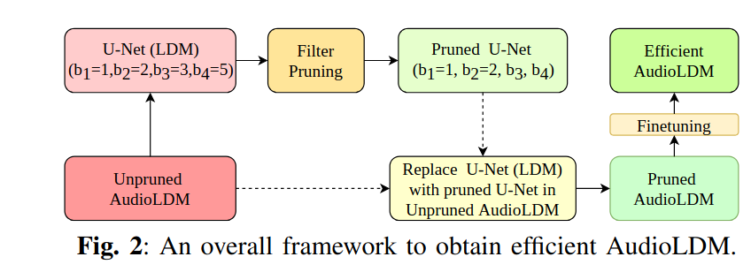
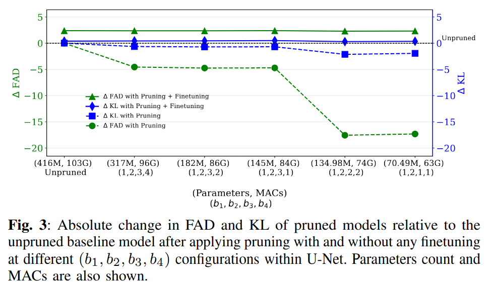
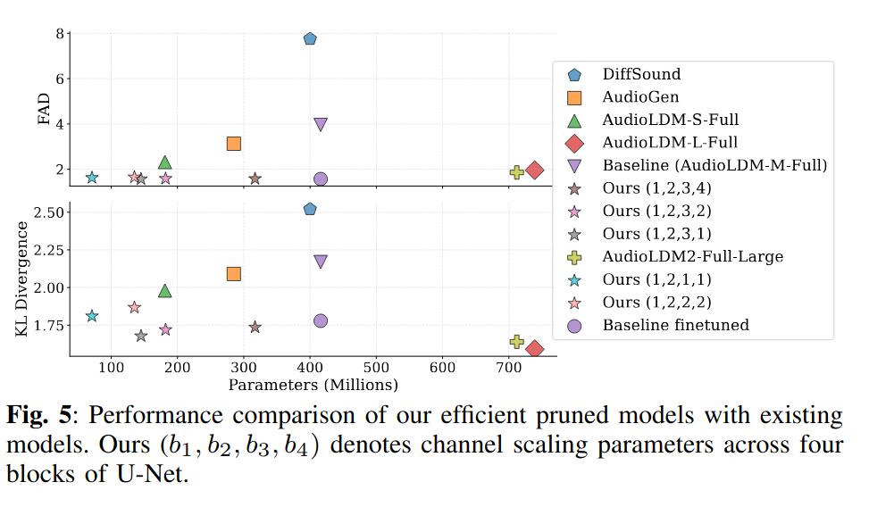
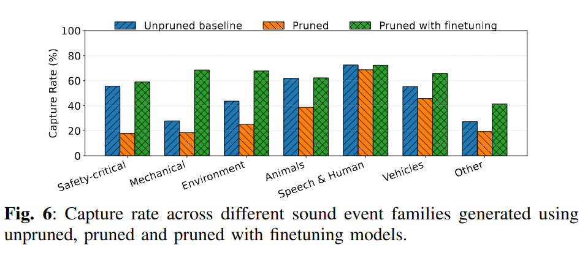

AudioLDM Framework & U-Net (LDM) Resources Analysis


Diffusion-based text-to-audio generative models such as AudioLDM achieve high perceptual quality and strong semantic consistency; however, their practical deployment is hindered by the substantial computational cost of the U-Net denoising backbone. In this work, we apply model pruning to improve the computational efficiency of AudioLDM, a U-Net based text-conditioned audio latent diffusion model. We analyse parameter redundancy across U-Net convolutional blocks and evaluate a filter-pruning strategy. Pruning is guided by norm-based criteria and followed by lightweight finetuning to mitigate performance degradation. Experimental results demonstrate that up to 83\% of the parameters and 39\% of the multiply–accumulate operations of U-Net has been reduced while maintaining, and in some cases improving, generation quality compared to the baseline unpruned network. We find that pruning affects AudioLDM’s ability to generate certain sound events including safety-critical sounds such as gunshots, sirens, and explosions, as well as mechanical sounds such as drills and sewing machines, and other sounds such as sprays and tick-tocks, which are mostly recovered by lightweight finetuning of the pruned model. The code is available at GitHub Link.





| Text input | Unpruned | Unpruned with FT | Pruned | Pruned with FT |
|---|---|---|---|---|
| A man speaks and then whistles | ||||
| A man speaking while water is spraying into a sink and draining | ||||
| Emergency sirens wailing as a vehicle accelerates in the distance | ||||
| A dog barks with distant birds chirping then people speak | ||||
| Pigeons are cooing | ||||
| Birds chirping and tweeting | ||||
| A sewing machine operating during several metal clacks | ||||
| Men speak with gunshots and booms | ||||
| A person is snoring | ||||
| Several gunshots with a click and glass breaking | ||||
| A woman and a child speaking | ||||
| Leaves rustling in the wind with dogs barking and birds chirping |
This work was supported by the Engineering and Physical Sciences Research Council (EPSRC) under Grant EP/Y028805/1.
For the purpose of Open Access, the authors have applied a Creative Commons Attribution (CC BY) licence to any Author Accepted Manuscript arising from this submission.